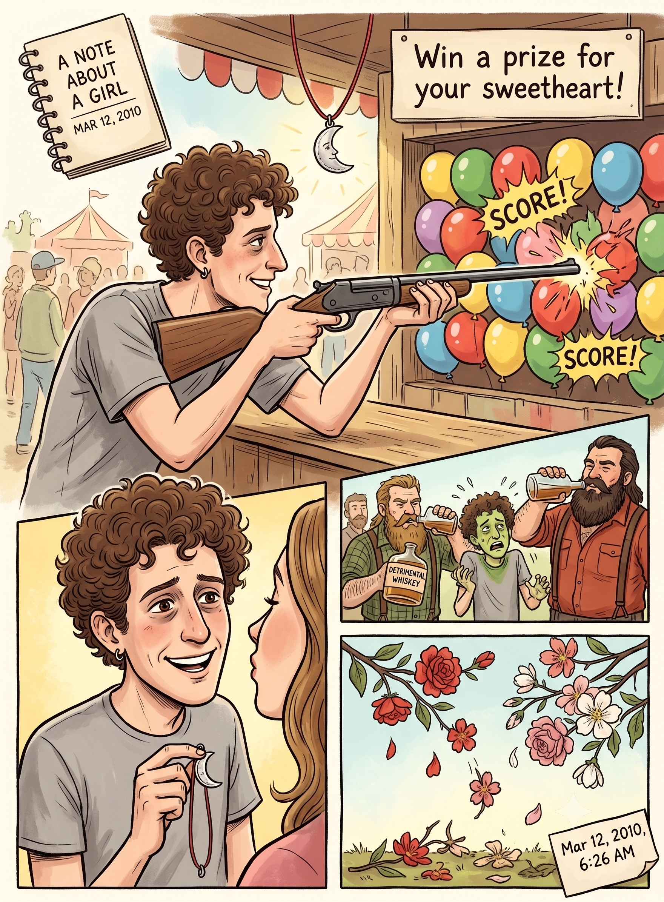

A Note About a Girl
I went to the fair today. I grabbed a rifle and shot some balloons—and I shot like I had never shot before. Every single shot I took, I scored. I shot as if I were trying to impress you, and I won you a prize: a beautiful half-moon on a red string.
I wanted so badly to put it around your neck and kiss you on the cheek afterward, just to see the smile break across your face. I walked around some more. Today really was a beautiful day, even though I was hungover, tired, and a bit mad. You would have made things so much better, just like that whiskey last night.

I am learning about leaving things behind. I am learning about yearning like the best of them, and about how drinking with woodsmen is deeply detrimental to a skinny guy like me. If and when I finally do fall asleep, don't bother waking me up.
Spring is fast approaching, or so they say, and I am still looking—but you would have kept fine company. I just made sure you were there in my mind. It was so quiet, kind of like when we used to be together, so it felt just the same.
I picked you some beautiful flowers in vibrant reds, pinks, and whites, and they all smell wonderful. But they are already falling off the trees now, and soon, they will disappear entirely. I guess I might miss you, and I know this little gift would look mighty nice on you.